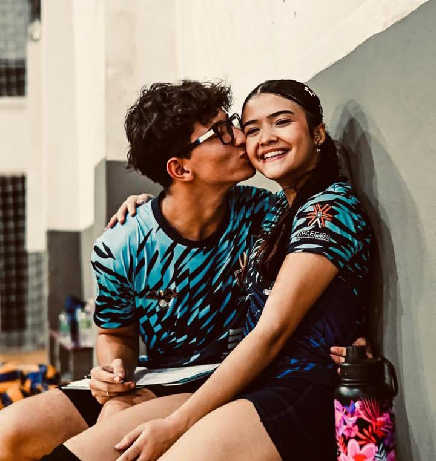

Nossa História
Criado com carinho por Luis Arthur
O que você significa para mim
Maria Clara, pensei em usar o que estou aprendendo em tecnologia para deixar comemorar essa data tão importante, hoje esta fazendo 4 meses do nosso namoro e como muitas pessoas falam sobre Você é a pessoa na qual eu escolho amar todos os dias
Você é a pessoa na qual quero compartilha os melhores momentos, seja nos esportes, nos jogos ou apenas descansando juntos.

Ter você ao meu lado torna minha busca por aprender e crescer muito mais especial. Sou muito grato por cada conversa e por todo o apoio que você me dá até hoje.
O REENCONTRO QUE O TEMPO JÁ SABIA
Adoro como nossas vidas se conectaram pois nós conhecemos no vôlei, onde nós dois somos apaixonados, jogamos juntos, passamos muitos momentos dificeis, cuidamos sempre um do outro e tenho certeza que des de quando nos conhecemos a 4 anos atrás sabiamos que uma hora iriamos se reencontrar independente do tempo que estivessemos distanciados.
Coisas que amo em você
- Seu sorriso
- Seu apoio constante
- Seu olhar
- Seu carisma
- Sua risada
- Seu cabelo
- Amo seu cheiro do cabelo
- Amo seu cabelo castanho escuro
- Cheirar teu suvaco
- Seu perfume
- Assistir você jogando vôlei
- Suas piadas
- Assistir Winderson Nunes
- Sua companhia
- Seu nariz
- Sua humildade
- Seu humor
- Suas mãos
- Nossas dormidas juntos
- Seu ronco
- Já falei seu sorriso? Se falei falo de novo
- Seu olhar
- Nossas conversas sobre o futuro
- Seu jeito único de ver o mundo
- EU SOU APAIXONADO EM VOCÊ POR TUDO O QUE VOCÊ É!!
- EU TE AMO APENAS POR SER VOCÊ MEU AMOR, sei que não coloquei muitas coisas mas é por que não existem palavras que podem definir a pessoa que você é!
Planos e Metas
Checklist do Nosso Futuro
| Meta | Status |
|---|---|
| Viagens inesquecíveis | Marcando de ir a Gramado e muitas outras viagens ✈️ |
| Conquistar nossos objetivos | Buscando sempre melhorar❤️ |
| Maratona de Filmes | Sempre assistir filmes com pipoca temperada 🍿 |